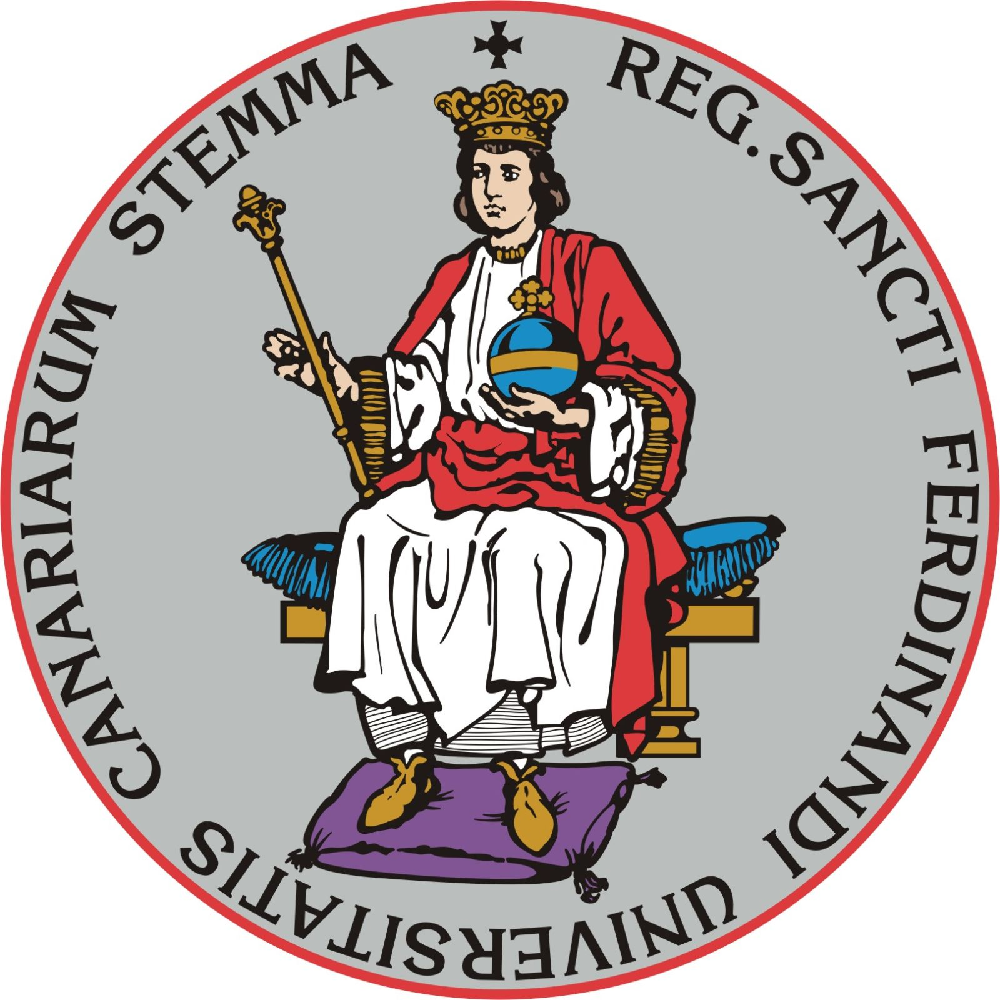

Creación de la Universidad
 La Universidad de La Laguna (ULL) es una universidad pública española situada en la ciudad de La Laguna, en la isla de Tenerife, en el archipiélago canario. Fue creada en 1792 por el rey Carlos III de España, como Real Universidad de Santa Cruz de Tenerife, y fue la primera universidad de España en ser creada en el siglo XIX. En 1986, la Universidad de La Laguna fue declarada Patrimonio Histórico de Canarias.
Años importantes
- 1792: Creación de la Universidad de Santa Cruz de Tenerife
- 1986: Declaración de Patrimonio Histórico de Canarias
- 2007: Creación de la Universidad de La Laguna